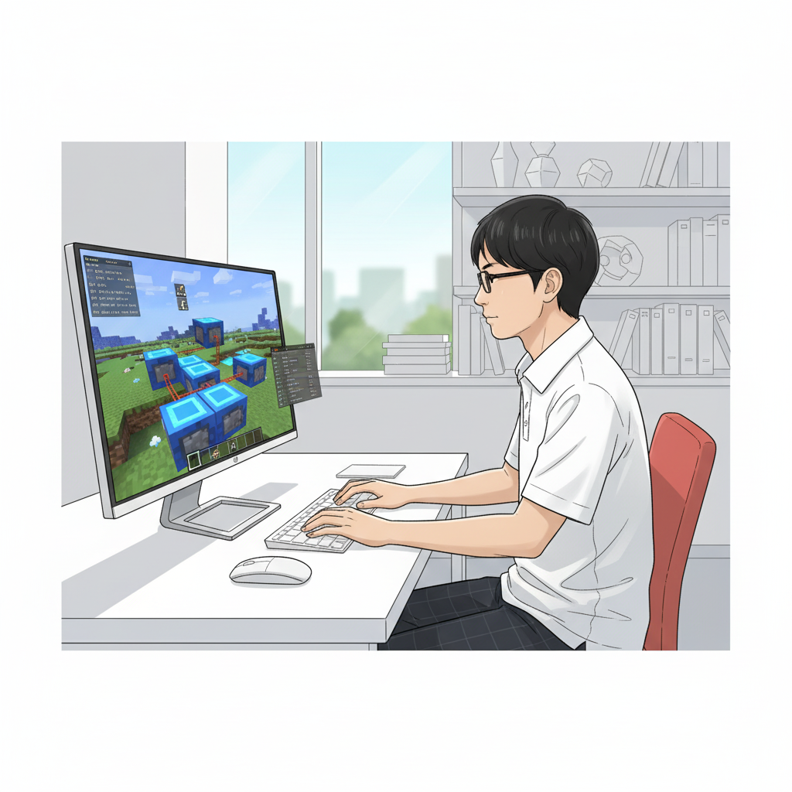
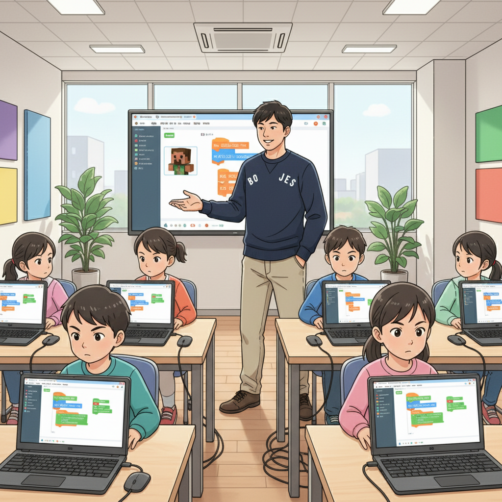
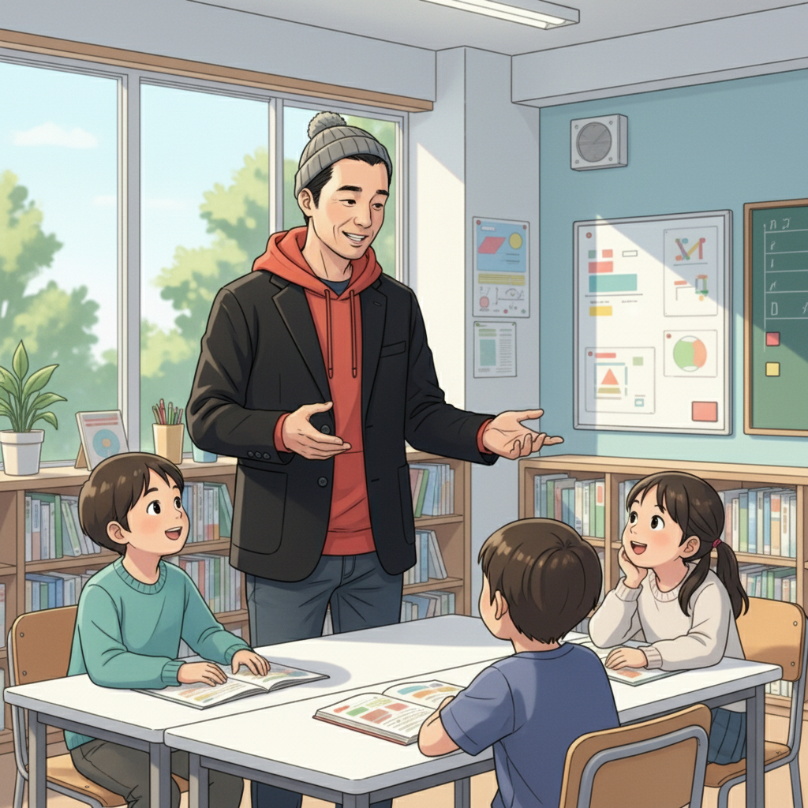

マインクラフトが秘める無限の可能性：ASDの才能を解き放て！（CTO）

皆さん、マインクラフトってただのゲームだと思っていませんか？実は、マインクラフトはプログラミング教育の入り口として、そしてASDを持つ子どもたちの才能を伸ばすための素晴らしいツールなんです！
僕自身、高校生の時にif塾の塾頭に出会い、マインクラフトの世界に没頭しました。特にコマンドブロックを使ったプログラミングにハマり、気づけば時間を忘れて没頭していました。周りからは「集中力がすごいね」と言われることもありましたが、自分では好きなことをやっているだけ。でも、その集中力こそが、僕の発達特性であり、才能だったんだと気づいたんです。
マインクラフトの世界では、論理的思考や問題解決能力が自然と身につきます。例えば、複雑な自動ドアの仕組みを作ろうと思ったら、どんな条件でドアが開閉するか、どんな回路を組めばいいかを考えなければいけません。これはまさに、プログラミングの基礎そのもの！
if塾では、マインクラフトを通じて、子どもたちが自分の興味や才能を発見し、それを伸ばしていくサポートをしています。eスポーツの世界で活躍するY君も、元々はマインクラフトが好きで、if塾でプログラミングを学び、ゲーム開発の才能を開花させました。
さあ、あなたもマインクラフトの世界で、眠っている才能を呼び覚ましてみませんか？
小さな成功体験の積み重ねが自信に繋がる！（塾長）

塾長の僕も、実はADHDとASDの診断を受けています。子どもの頃は、学校になじめず、勉強も苦手で、自信をなくしていました。でも、高校生の時にif塾の塾頭に出会い、自分の特性を理解し、強みに変えることができたんです。
マインクラフトは、発達障害を持つ子どもたちにとって、成功体験を積み重ねやすい環境です。最初は簡単な建築物を作ることから始めて、徐々に複雑な回路やプログラムに挑戦していく。一つ一つクリアしていくことで、「自分にもできるんだ！」という自信が生まれます。
if塾では、子どもたちのペースに合わせて、無理なくステップアップできるようなカリキュラムを用意しています。また、同じような悩みを持つ仲間たちと出会い、互いに刺激し合い、支え合うことで、孤独感を解消し、前向きな気持ちで学習に取り組むことができます。
発達特性は、決して「障害」ではありません。むしろ、他の人にはない、ユニークな才能の源泉です。if塾は、その才能を見つけ、開花させるための場所。プログラミングを通して、子どもたちが自分らしい成長を遂げられるよう、全力でサポートしていきます。
才能を活かしてeスポーツの世界へ！Y君の挑戦（CTO）
if塾から巣立ったY君は、eスポーツの世界で活躍しています。彼は、幼い頃からゲームが好きで、特にマインクラフトに夢中でした。if塾では、彼のゲームに対する情熱を尊重し、プログラミングスキルを磨くサポートをしました。
Y君は、発達特性による独特な集中力と、ゲームに対する深い理解力を活かし、独自のプレイスタイルを確立しました。彼のプレイは、多くのファンを魅了し、今ではプロのゲーマーとして活躍しています。
Y君の成功は、発達障害を持つ子どもたちに大きな希望を与えています。「自分にもできるかもしれない」という気持ちが、彼らの可能性を大きく広げるのです。
if塾は、Y君のように、才能を活かして夢を叶える子どもたちを、これからも応援していきます。
一歩踏み出す勇気を！if塾で未来を拓こう！（塾頭）

臨床心理士として、そしてITエンジニアとして、私は多くの子どもたちと出会ってきました。その中で強く感じたのは、発達特性を持つ子どもたちは、素晴らしい可能性を秘めているということです。
しかし、学校や社会の枠組みの中で、その才能が埋もれてしまっているケースも少なくありません。if塾は、そんな子どもたちのために、「もし（if）」才能を活かせる場所があったら、という想いから生まれました。
不安や悩みを抱えているのは、あなただけではありません。if塾には、同じような経験をした仲間たちがたくさんいます。そして、あなたの才能を信じ、応援してくれる大人たちがいます。
さあ、一歩踏み出して、if塾で自分らしい成長を始めてみませんか？私たちは、あなたの未来を全力でサポートします。
🎯 興味を持っていただいた方へ
if塾では、発達特性を持つ子どもたちの「好き」を「才能」に変える教育を行っています。現在の記事内容と実際の活動に大きなズレはありませんが、詳細については直接お問い合わせください。
📌 記事について
この記事は、塾頭による完全自動化への挑戦としてAIが自動生成しています。将来的には塾頭が執筆しているような記事になることを目指しており、現時点では事実と異なる内容が含まれる可能性があります。最新の正確な情報については、お問い合わせフォームよりご確認ください。
🤖 Generated with AI - if塾のブログ自動化プロジェクト